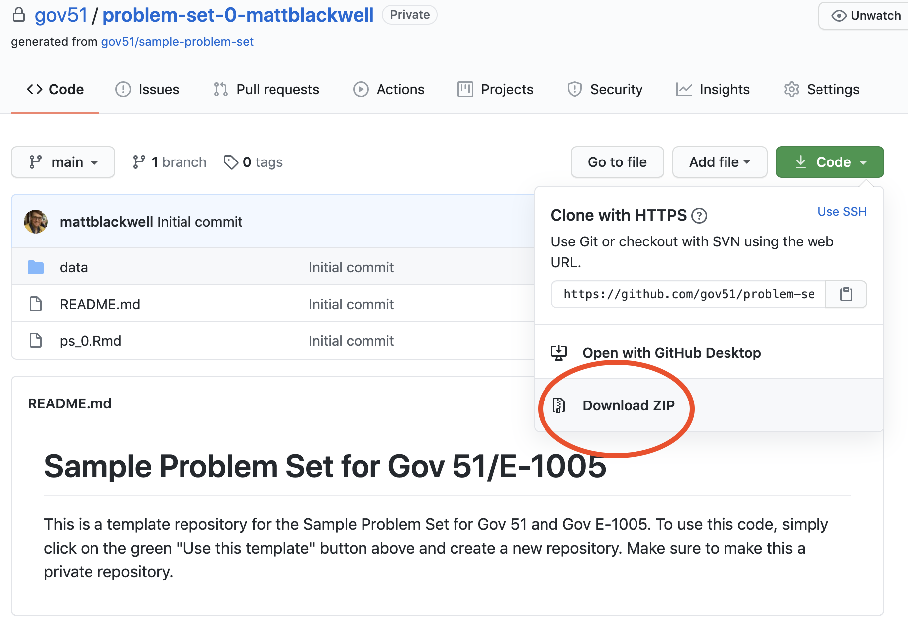
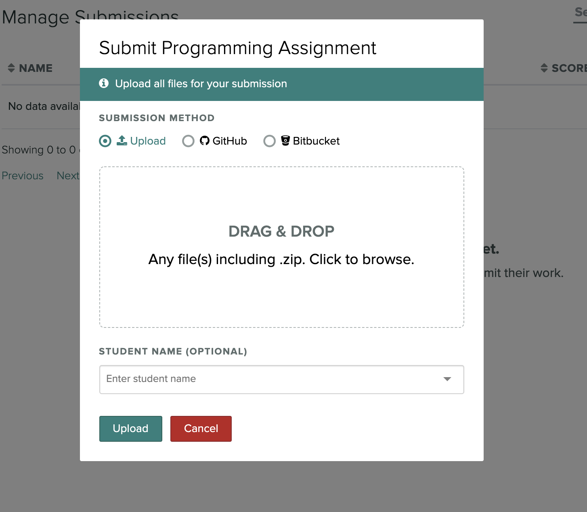
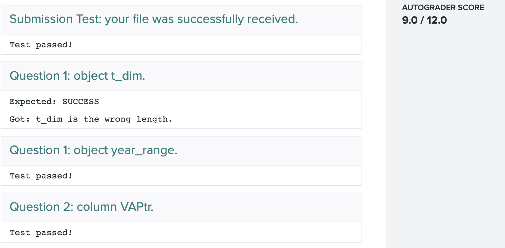

Problem Sets and Exams
For both problem sets and exams, you will end up producing two types of documents:
- An
.Rmdfile (or “RMarkdown file” when spoken) that is a plain-text file that contains the text of your write-up and the code used to do all of the calculations for the assignment. You don’t apply markup directly like in Word or Google docs, but by using various text shortcuts, like in Slack. - An output
.pdffile that contains the compiled version of the Rmd file. Usually, you might call this the write-up and it will be nicely formatted and ready for non-technical folks to read. In other classes, you might write these in Microsoft Word or Google Docs. In this class, this will be the output of compiling (or knitting, in the R lingo) the.Rmdfile.
Problem set workflow
The text of the problem sets will be posted here on the course website. We will distribute templates and data for the problem sets via Github. To get started, follow these steps:
- Go to the Ed Board and find the pinned thread with the GitHub Classroom links for each assignment.
- Click on the Github Classroom link for the assignment in question. You’ll be presented with a page that asks you to accept the assignment. Click “Accept this assignment”.
- Go to this new problem set repository on GitHub. Click on the green “Code” button toward the top right of the page. When you click that, a popup will appear and you can copy the URL (you can click the little clipboard icon to copy this automatically).

Now, switch to RStudio. Go to the menu bar and hit “File > New Project”. You can then choose what type of project to start. Since we’re importing from Github, we’ll use the “Version Control” option (it’s the bottom of the list). In the next menu, choose “Git”. Now, you can paste the URL in the “Repository URL” box. Choose a set of local directories to place this project and hit “Create Project”. Because this is a private repository, you will be prompted to enter your GitHub username and password. Go ahead and do this.
As you make changes to your file, make sure to commit those changes. Every commit is a point that you can always go back to if your code stops working for some reason. So doing this often will make sure that you have access to that great feature of git. At an absolute minimum, you should do this every time you complete a question, though you may want to do it more often than that. Committing often means you also don’t have to constantly create new versions of the same file because you’re afraid of making some change. Also, make sure to use informative commit messages so you know what’s changing. Important: be sure to answer the questions in the Rmd file provided by the template. This is what the autograder will look for when you submit.
At some point, you’ll want to push your changes back to GitHub so the teaching staff can see your work (if you need help) or so that you can submit to Gradescope.
Submitting your assignments
Step 1: Download your GitHub repo as a zip file

Once you are think you have completed the assignment, make sure to push your commits to GitHub and then go to the repository website and download the repo as a .zip file under the green “Code” button. It’s important to use the default name for the zip file, so you may have to delete an older zip file if you have already downloaded it to the same location. In general, it will have the structure problem-set-X-username-main.zip where X is the problem set number and username is your GitHub username. Note: do not add this zip file to your repository.
Step 2: Submit the zip file to Gradescope
On Gradescope, you’ll find two entries for each assignment. One will be labelled “Zip File” and the other “PDF”. Click on the Zip File entry and drag/select your zip into the box. Click “Upload.”

Step 3: Check autograder output
When you submit the zip file, Gradescope will run a series of tests on your code to see if it runs and to check that you have completed the coding tasks asked of you in the assignment. You’ll see a list of test results and an overall score.

Check the messages on any questions you got wrong for hints about how to fix them. You may then re-upload the zip file again once you have fixed the code. You should repeat this process as many times as needed before you get a perfect score.
If you get an autograder error saying “The autograder failed to execute correctly” and you are using the Safari browser on macOS, check to see if Safari is unzipping the zip file automatically upon download. If it is, you can turn off this setting by following these instructions.
Step 4: Upload PDF
Once you are satisfied with your autograding, then you should produce your final PDF report by hitting the “Knit” button at the top of the RStudio editor. This should produce a PDF output that you can then upload to Gradescope. In Gradescope, there will be an assignment labelled “Problem Set X: PDF”. There, you will be prompted to upload your final PDF report. You’ll be asked to indicate on which page each answer is. Label the PDF with where those answers are (being sure to mark two different pages if an answer continues on two pages).
Checklist
- Accept GitHub Classroom invite.
- Use RStudio to “Clone with HTTPS” this repo to your computer.
- Make progress editing the
.Rmdfile.- As you do, commit and push to GitHub regularly.
- You can check your answers with the autograder at any point.
- Make sure to name your code chunks.
- Add the names of anyone you discuss the problem set with on your write-up.
- Push final version to GitHub and download the
.zipfile. - Upload the
.zipfile to the Gradescope autograder. - Upload final
.pdffile to Gradescope.
Writing good code
You’ll be writing code to do the analyses in this class. Code, like any language, provides many different ways of saying the same thing. One good practice of coding is to have what’s called good coding style. This refers to how you format the code that you so that it is (a) easy for you and others to read, and (b) less prone to making mistakes. Here are some general guidelines for writing R code and Rmd file.
- When writing R code and unless we tell you otherwise, follow the tidyverse style guide. For this class, the relevant parts of this document are the first couple of chapters. If you are ever uncertain about how to name something or how to write some code, see this document and it will likely help you quite a bit.
- Make sure the code chunks in the Rmd file have blank lines above and below them. If you don’t have this, it can sometimes cause problems with compilation.
- Try to keep your lines of code shorter than 80 characters since this makes reading code much easier. Usually this means writing some function arguments on a different line. See the style guide (section 2.5) for more on this.
- Include comments in your code and format them nicely as in section 3.4 of the style guide. These comments should explain why you wrote the code you wrote and any notes you had about how you came to this solution. This might include, say, other approaches you tried but didn’t work or approaches you might want to try if you ever revisit this. Look at our code and examples to get a sense of how to use comments. In RStudio, you can nicely format a comment by hitting Control-Shift-\.